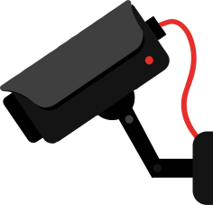
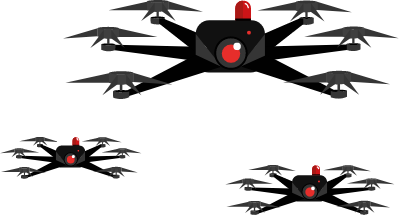
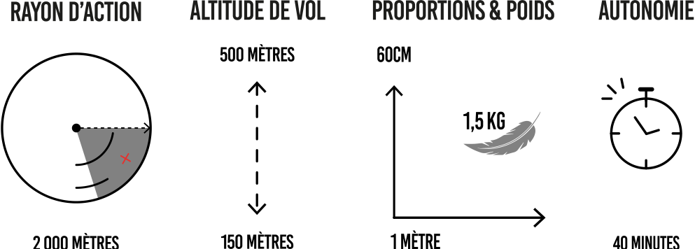

PEUR SUR MA VILLE
//2019
BIENVENUE A
TECHNOPOLICE
BIENVENUE A TECHNOPOLICE
Technopolice, c’est la ville de demain mais déjà celle d’aujourd’hui.
Celle dont la sécurité est la priorité, dont l’idéal de contrôle est rendu possible par vos données.
Technopolice, c’est moi. Un projet collaboratif qui vous rend partenaire de cet écosystème de sécurité.
Je suis le fruit d’innovations matérielles sans limites au service des forces de l’ordre,
d’alliances durables entre États et entreprises privées, de projets électoraux ambitieux.
Grâce à mes robots autonomes, mes officiers connectés et mes systèmes de reconnaissance génomique,
je suis la solution aux incivilités, aux agressions, à la délinquance.
J’assure la disponibilité, la confidentialité et l’intégrité de toutes vos données.
Grâce à elles, nos élus ont tous les moyens pour affronter les menaces qui pèsent sur le territoire.
Plus que votre sécurité, j’assure votre bien-être, votre tranquillité, votre bonheur.
VOUS NE ME PENSEZ PAS RÉELLE ? POURTANT JE SUIS DÉJÀ LÀ.
Je vous identifie à Nice, je vous suis à Pékin, je vous observe à Londres. Pour une visite inédite de mes plus beaux points de vue, suivez mon regard...
JE VOUS TRAQUE

JE VOUS VOIS
LE DRONE C'EST QUOI CONCRETEMENT ?
Vous connaissez sûrement les drones, engins volants pilotés à distance permettant la collecte d’informations par voie aérienne. De taille réduite et moins coûteux qu’un avion, il représente une alternative intéressante dans le recueil de renseignements.
 ... ET DANS LE MONDE ?
Dakota du Nord, USA
La Dakota du Nord l’un des premiers États américains à équiper les forces de police de drones...Mais pas n’importe lesquels ! En 2015, la législation qui interdisait d’armer les drones s’assouplit pour autoriser l’intégration aux drones policiers d’armes “non létales”, à savoir sprays lacrymogènes, de pistolets à impulsion électrique (ou Taser) et de lanceur de balles de défense. Ces mêmes armes qui ont provoqué la mort de plus de 500 personnes aux États-Unis entre 2001 et 2013…
Inde
En 2015, la police du nord de l’Inde s’est procurée des véhicules aériens en mesure d’asperger les manifestants et autres personnes menaçant l’ordre public de gaz lacrymogènes. C’est notamment le cas de la ville de Lucknow, qui s’était équipée de 5 paires d’yeux volantes de 10 000 dollars chacune, capable de transporter plus de 2 kilos de poivre. Idéal pour “contrôler les foules indisciplinées”, selon le commissaire de police de la ville….
Afrique du Sud
La ville du Cap a annoncé en septembre 2014 son intention de s’équiper de drones pour éviter des dépenses trop onéreuses dans le recours aux hélicoptères. Le Monde rapporte l’éclectisme des missions envisagées : surveillance de zones occupées illégalement, lutte “contre le crime, les vols de métaux et les incendies”
Chine
En 2018, la Chine expérimente des drones d’une toute autre apparence... Les pigeons-drones, au camouflage réaliste et discret, sont devenus les nouveaux gadgets des forces de l’ordre. Toujours en phase de développement, ces robots bioniques permettraient une surveillance high tech de la population chinoise…
Où EN EST ON EN FRANCE ?
Vous ne vous sentez pas concerné.e.s par l’utilisation de drones de surveillance, de pigeons-robots et de pulvérisateurs électriques depuis le ciel ? Pourtant en France, Technopolice traverse une étape plus qu’embryonnaire…Selon vous, qui est devenu la nouvelle lubie des maires français ?
Cliquez sur l'une des villes pour avoir une description détaillée
Cannes : C’est très récemment que la police municipale de Cannes a rejoint la valse bourdonnante des auxiliaires de surveillance avec l’acquisition d’un drone haute performance. Équipé d’une caméra sophistiquée, il vient renforcer depuis août 2019 le dispositif de sécurité dans les massifs forestiers et de prévention des incendies dans la région.
Essonne : C’est pour traquer les chauffards imprudents que la police Municipale de l’Essonne a choisi de se procurer un drone en mai 2019. Ce premier test de contrôle routier depuis le ciel montrerait un nombre de verbalisations doublé par rapport aux contrôles classiques...
Pas de Calais : Pour lutter contre la traversée clandestine de la Manche, les gouvernements français et britanniques se sont accordés en janvier 2019 pour que la préfecture se dote de plusieurs drones. Survolant les plages du littoral, les engins traquent les migrants envisageant des départs illégaux.
Charentes-Maritimes : Les élus de Charentes Maritimes ont remis en juin 2019 quatre drones aux services sécurités intérieures dont un à la police. Sont envisagées des missions tous azimuts : surveillance des manifestations Gilets-Jaunes, filature aérienne, découverte de scènes de crime…
Istres : Équipée de 2 drones depuis avril 2018 , Istres est la première commune à doter la police municipale de tels outils. Les 90 caméras de surveillance pour 42 000 habitants ne semblant pas suffire aux 80 policiers en fonction, les deux engins faciliteront grâce à leur caméra enregistrant en 4k la transmission, la localisation et l’identification en temps réel des auteurs de méfaits.
Évreux : Après le doublage des effectifs de police depuis 2015, la municipalité d’Évreux a décidé d’étirer ses moyens jusqu’à l’acquisition de deux drones, servant pour la surveillance de grands rassemblements et de stationnement illicites des gens du voyage…Cerise sur le gâteau pour la commune décidément investie dans le développement de son dispositif de sécurité : les effectifs policiers vont prochainement être équipés de caméras individuelles lors de leurs interventions sur la voie publique !
"NOUS DEVONS ALLIER HUMAIN ET TECHNOLOGIE"
Par ces mots et l’ambition qui en émane, Mounir Mahjoubi s’érige en véritable bâtisseur de Technopolice. Député LREM de Paris, l’ancien secrétaire d’État chargé du Numérique avait fait miroiter dans sa candidature aux municipales de Paris ses intentions novatrices pour lutter contre l’insécurité.
Ce ne sont pas moins de 240 drones qu’il imagine survoler la capitale pour prévenir la délinquance et l’incivilité. En complément à cet essaim de caméras, il prévoit l’installation de 20 000 boutons d’urgence dans les rues de Paris pour appeler les forces de l’ordre en cas de “danger ou vulnérabilité”. La somme du budget envisagé? 3,8 millions d’euros annuels.
Si Cédric Villani, auquel s’est finalement rallié l’ancien candidat, reste mystérieux dans sa campagne électorale quant à ce projet singulier, son discours s’inscrit également dans une dynamique offensive envers les problèmes d’insécurité. Pour commencer, le recrutement de 1000 agents supplémentaires dans les rangs de la police municipale...
LA VIDÉOSURVEILLANCE, C'EST QUOI CONCRÈTEMENT ?
M'échapper ? Impossible. Mes yeux sont partout : dans la rue, le long des routes, dans l'ombre des parkings, sous les abribus... Sans moi, vous seriez si vulnérable dans ces lieux publics exposés à des risques d'agression, de vol ou de trafic de stupéfiants !
Avec mes caméras dômes pivotantes sur 360 degrés, mes orbitent roulent comme ceux du célèbre chat d'Alice au pays des merveilles. Je vous rends ainsi de précieux services : dissuasion et contribution à la prévention de la délinquance, aide à l'intervention et l'investigation, gestion des événements publics et des incidents.
Ne me remerciez pas, je vous dois déjà un peu de ma réussite. En France, c'est principalement grâce au Fonds Interministériel de Prévention de la Délinquance, financé sur le budget général du Ministère de l'Intérieur, que vous me permettez d'exister.
De 2007 à 2015, l'Etat a déboursé 152 millions d'euros pour aider les mairies à s'équiper. Pour la bagatelle de 500 000 euros par an pour un équipement moyen, nos communes peuvent déjà bien s'armer : matériel, stockage, maintenance et personnel.
La dernière fois que la CNIL les a listées en 2012, on comptait 935 000 de mes caméras dans l'ensemble des lieux ouverts au public (autoroutes, galeries marchandes, commerces, administrations, entreprises, équipements sportifs…). Mais rassurez-vous, le nombre doit dépasser allègrement le million aujourd'hui !
PANOPTIQUE SANS FRONTIÈRES
LA FIN JUSTIFIE LES MOYENS.
Les premières caméras filmant les espaces publics 24h/24 remontent aux années 80. En 1994, le ministère de
l'intérieur britannique entreprend une "Révolution de la vidéosurveillance" et débloque 2 millions de livres
sterling pour l'installation de caméras, d'après Arte.
Dans tous les pays européens pour lesquels des infos sont disponibles, il semble que l'on s'oriente vers
toujours plus de surveillance, pour votre plus grand bonheur. En 2014, il y avait 245 millions de caméras de
surveillance installées par des professionnels à travers le monde. La même année, les fabricants de
technologies de surveillance que sont Bosch, Samsung ou encore Sony ont engrangé environ 23,5 milliards de
dollars. Les analystes prévoient une croissance à deux chiffres du marché pour les années à
venir.
LES MEILLEURS ÉLÈVES
Pékin, mon chouchou chinois. C'est là-bas qu'on m'octroie déjà les pleins pouvoirs. Dès 2015, la capitale
était couverte à 100% avec 46 000 caméras selon China Daily, aboutissement d'un projet national de
surveillance appelé Skynet lancé 10 ans plus tôt. Et pour le reste de l'immense pays ? Le gouvernement
chinois a l'intention de surveiller complètement les "zones publiques clés" à travers le pays d'ici 2020. Un
modèle déjà appliqué dans une autre ville de l'Empire du Milieu, mon amie Chongqing : quelque 2,58 millions
de caméras de surveillance couvrent 15,35 millions de personnes… soit 1 caméra pour moins de 6
personnes.
Prenez-en de la graine. Encore en Grande-Bretagne, la British Security Industry Authority a estimé qu'en
2013, le pays disposait d'une caméra de télévision en circuit fermé (TVCF) pour 14 personnes, faisant de la
population britannique l'une des plus surveillées au monde. En 2010, les images filmées par les caméras ont
joué un rôle dans 841 procès dans le district de Wandsworth, selon un porte-parole du conseil du district.
Au total, le Londonien moyen est filmé plus de 300 fois par jour.
FILMER PLUS POUR PROTEGER PLUS
Depuis 2011, une majorité de villes a continué d’investir. Paris, Lyon, Marseille etc. : la quasi-totalité des métropoles ont misé dans mes technologies. Dans le classement européen des villes qui disposent du plus grand nombre de caméras par habitant, Paris et son parc de 33 000 caméras n’arrivent hélas qu’en huitième position, juste devant Sofia et Nice.
Nantes
Laurence Garnier sort son « plan d’urgence pour la sécurité ». Si la candidate de la droite et du centre est élue maire, elle doublera le nombre de policiers municipaux, les armera de pistolets, créera 11 annexes de police municipale dans les quartiers, et installera 100 caméras de vidéosurveillance supplémentaires. Son objectif en six ans : réduire les chiffres de la délinquance de 30 % à Nantes. (Ouest-France)
Toulouse
“L'augmentation du trafic des stupéfiants et la multiplication des points de deal sont un problème” dans la ville rose. Pour régler en partie le fléau, Nadia Pellefigue (mouvement UNE) souhaite, si elle est élue en 2020, revoir les effectifs de la police nationale à la hausse. Il manque, selon elle, près de 200 policiers à Toulouse. Elle souhaite à ce propos redéployer les 380 caméras de vidéoprotection que compte la ville à la mesure de «leur efficience». (La dépêche)
Marseille
Dans le cadre de l’Observatoire Big Data de la tranquillité publique réalisé avec le leader du marché de la vidéosurveillance Engie Inéo, Caroline Pozmentier, adjointe à la sécurité publique de Marseille, prévoit le déploiement d’un second millier de caméras dans la ville. De quoi alimenter les flux du vaste réseau de vidéo-surveillance rendu intelligent grâce au traitement de l’image.
ALERTE!
Halte à la surveillance policière dopée aux Big Data !
Nous sommes des hackeurs anonymes et avant tout défenseurs des libertés individuelles.
Nous nous mobilisons ici pour exprimer notre refus de ces outils de contrôle et de domination
technocratique
qui rongent peu à peu les espaces d’expression démocratique dans le monde.
Car Technopolice reprendra bientôt le contrôle de cette page,
nous n’avons pas de temps à perdre avec de grands discours.
Êtes-vous si sûrs de vouloir vivre dans Technopolice ?
Prenez le temps de vous renseigner un peu plus en slidant vers le bas...
ET DEMAIN ?
Vous voir, vous suivre, c’est déjà bien. Mais ça n’est pas suffisant. Pour aller encore plus loin, je vous propose ma dernière acquisition en date : la reconnaissance faciale. Je ne la maîtrise pas encore à la perfection, mais je progresse...
Vous en avez sans doute déjà entendu parler, mais savez-vous exactement de quoi il s’agit ?
C’est une technologie biométrique d’authentification et d’identification. En d’autres termes, des logiciels capables d’identifier des visages dans des images (photo ou vidéo) et de les comparer à d’autres visages de personnes recherchées, enfant perdu ou dangereux criminel.
Et devinez qui est ma meilleure élève, comme d’habitude ?
Bingo, c’est la Chine ! Testé dans 16 villes et provinces, le système Skynet de caméras de surveillance dopées à la reconnaissance faciale a déjà permis d'arrêter 2000 fugitifs en deux ans, rapportent les médias officiels. Censé couvrir la totalité des lieux publics majeurs du pays en 2020, il sera capable de scanner l'ensemble des 1,37 milliard de Chinois en « une seconde », assurent fièrement ses développeurs. Et ce « quels que soient l'angle et la luminosité » !
Vous désespérez de ne pas vivre en Chine et accéder à cet idéal de vivre-ensemble ? Séchez vos larmes. La reconnaissance faciale débarque bientôt dans nos territoires. Et avec elle, la promesse d'identifier vos jolis minois.
Le conseil de la région Sud (anciennement PACA) a autorisé une expérimentation pour installer des portiques de reconnaissance faciale dans deux lycées à Nice et à Marseille, dans l’objectif évident d’étendre ce dispositif à l’ensemble des établissements de la région.
Vous doutez de la légalité de la démarche ? N’ayez crainte, la justice nous donne raison.
ALERTE!
Les innovations technopolicières ne sont pas sans conséquences sur l'avenir de notre humanité. Elles perpétuent une forme de contrôle insidieux par et dans l’intérêt d’une minorité dominante au prix de la liberté de chacun. La notion de sécurité peut s’appréhender autrement que par le développement technologique d'un arsenal policier et militaire.
Soyez libre de vous faire votre propre avis.
Nous vous donnons l'opportunité ici, de prendre connaissance du nôtre :
- Comment l’Europe se prépare à espionner ses citoyens
- Les drones de surveillance ne créent-ils pas plus de problèmes qu'ils n'en résolvent ?
- Drones: à quand des moyens de lutte efficaces ?
- À Toulouse, avec un haut-parleur sur une caméra, la police vous rappelle à l'ordre à distance
- La vidéosurveillance vous fait flipper ? Attendez de voir ce qu'on vous prépare
- Un Anglais écope d'une amende car il se cache d'une caméra de reconnaissance faciale